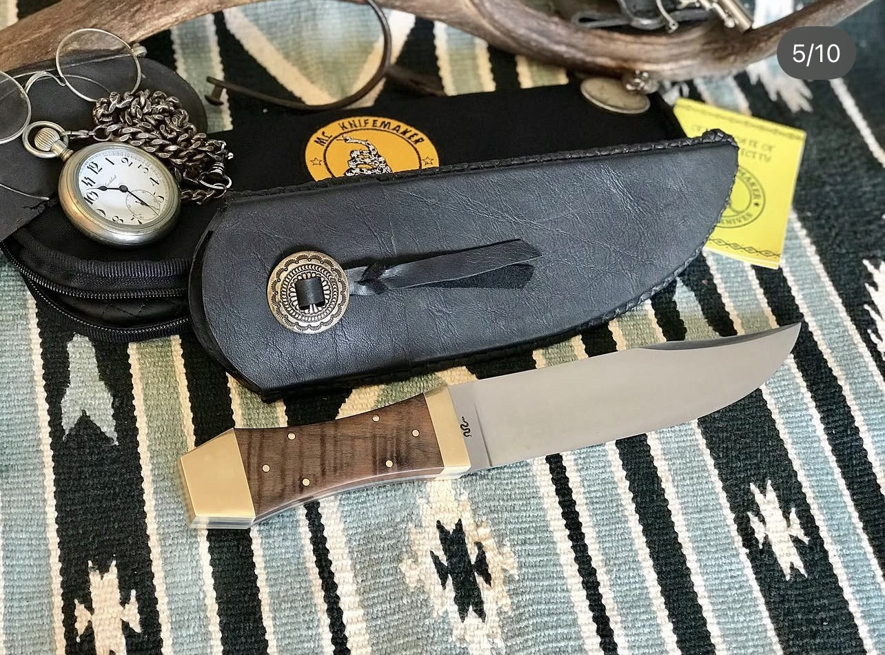
01
Frontier Period
Traditional frontier-inspired forms with character and history.
 MC KNIFEMAKER
MC KNIFEMAKER
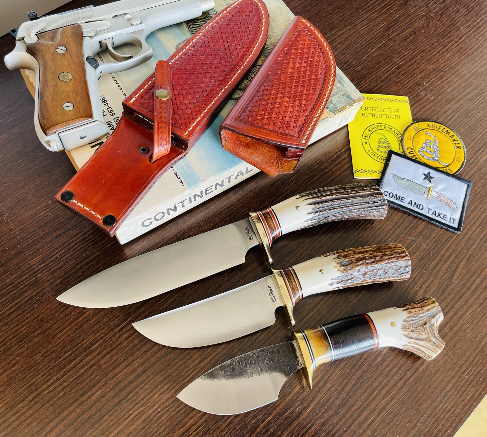
A personal interpretation of traditional American knife styles, from Frontier Period and Scagel-inspired work to classic Bowies, Marbles and practical EDC designs.
MC Knifemaker focuses on traditional and classic knife styles — designs with history, character and a strong connection to the outdoors.
Four directions that define the work, plus a place for practical and individual designs.

Traditional frontier-inspired forms with character and history.
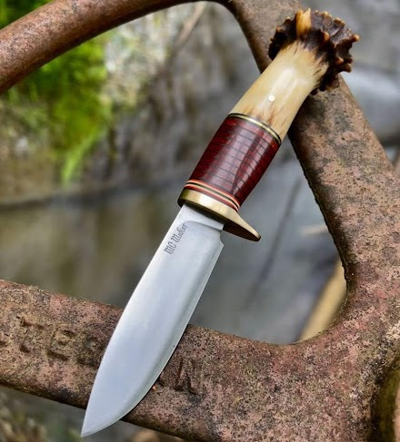
A personal interpretation of the classic Scagel tradition.
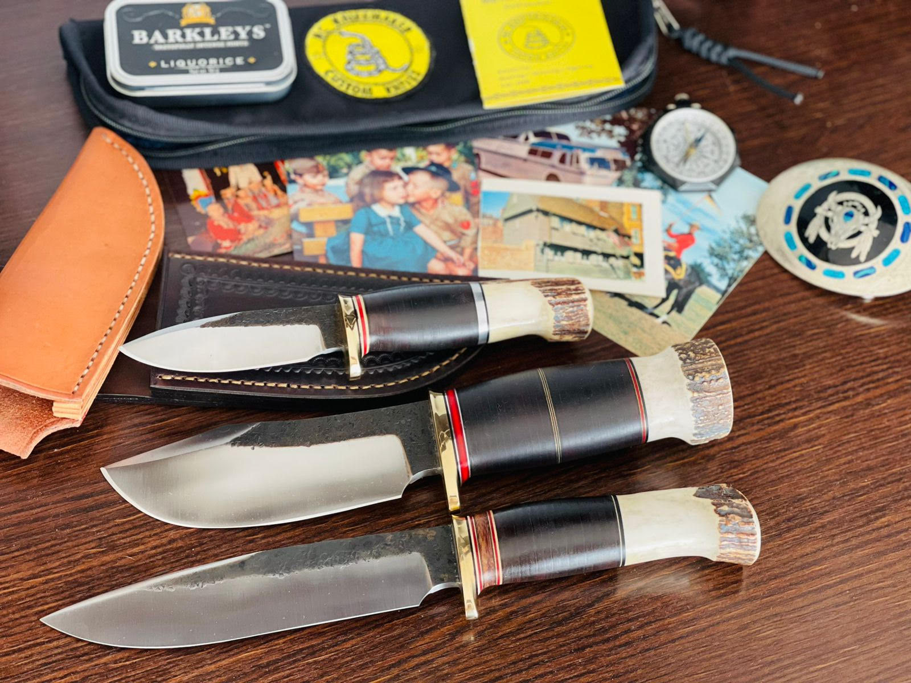
The iconic American knife form, interpreted through traditional craftsmanship.
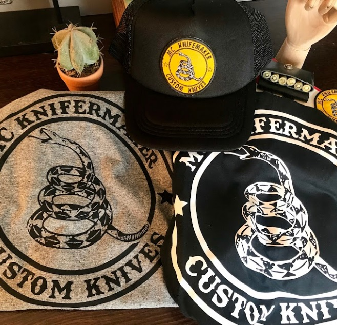
Classic sporting and hunting forms inspired by the Marbles tradition.
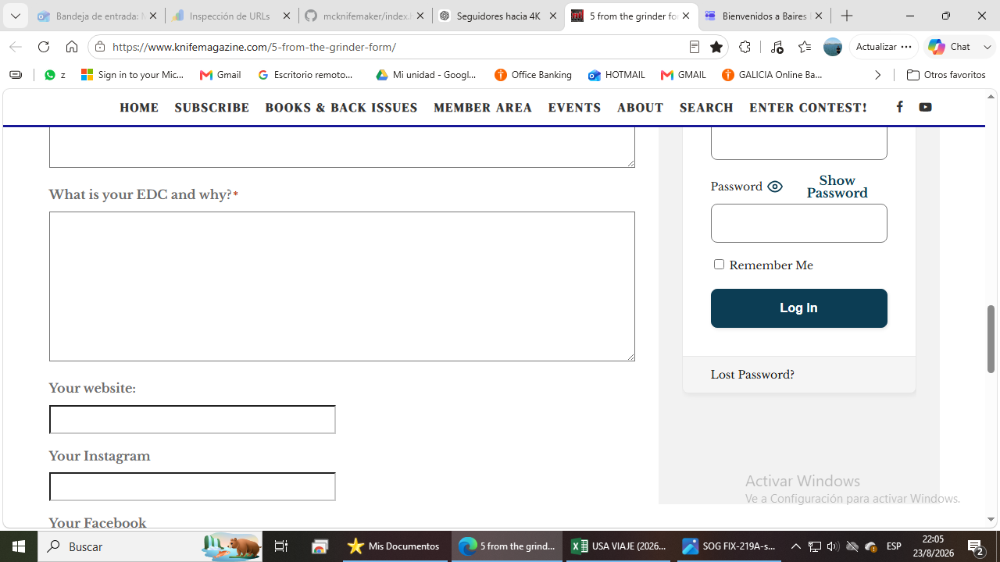
Practical and individual designs outside the main historical categories.
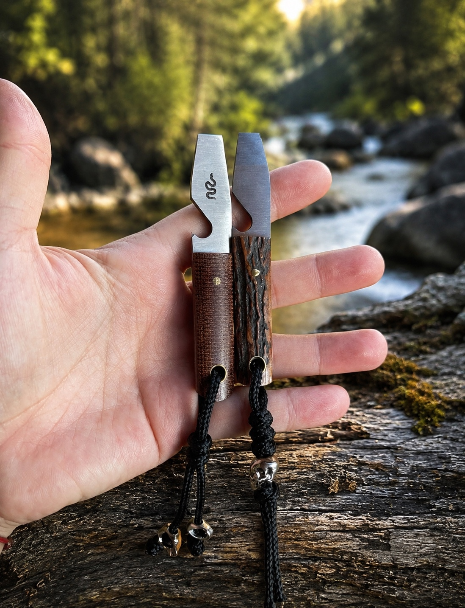
My passion for knives began in childhood, influenced by my father, a hunter, gunsmith and hobby knifemaker. I began making knives in 2018 and have never stopped.
I am drawn to traditional and classic designs — forms with character, history and a story behind them. My work focuses on preserving and interpreting styles that are becoming increasingly rare.
Randall · William Scagel · Marbles · Daniel Winkler · John Cohea
Selected photographs of handmade knives and traditional designs.

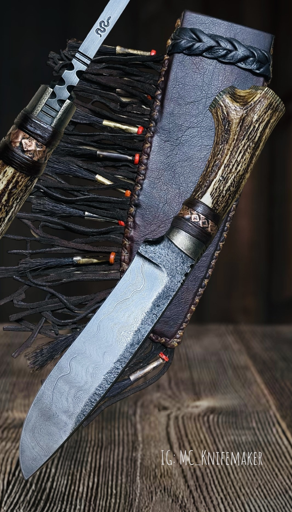
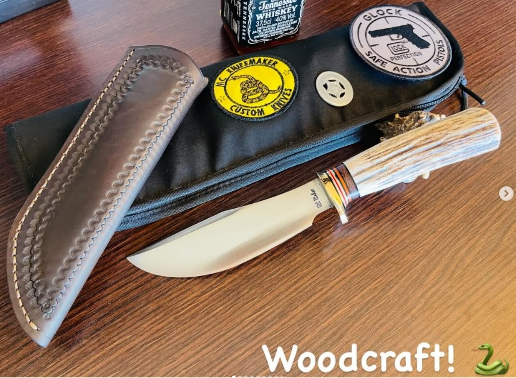
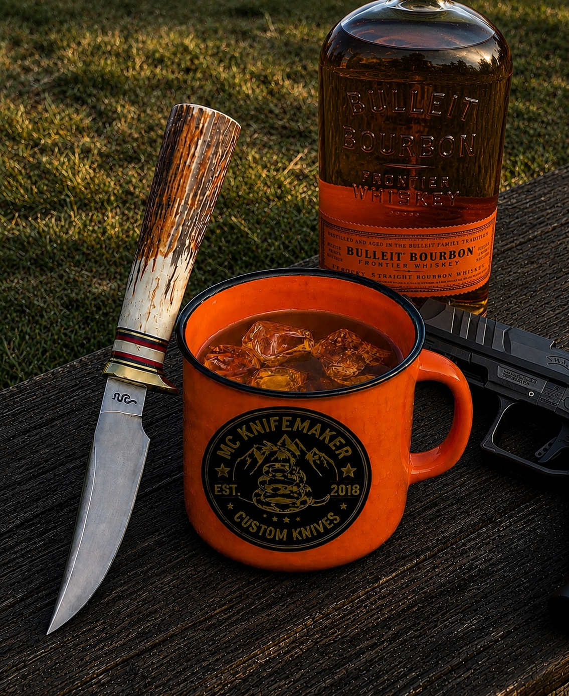

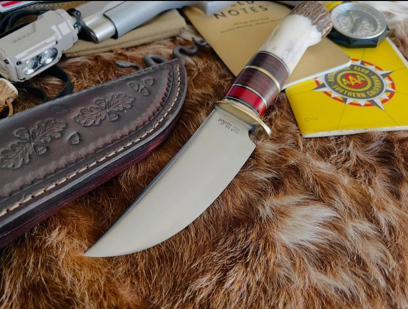
Selected MC Knifemaker pieces and branded goods available for purchase.
Custom knives currently available will appear here.
A selection of completed pieces for reference.


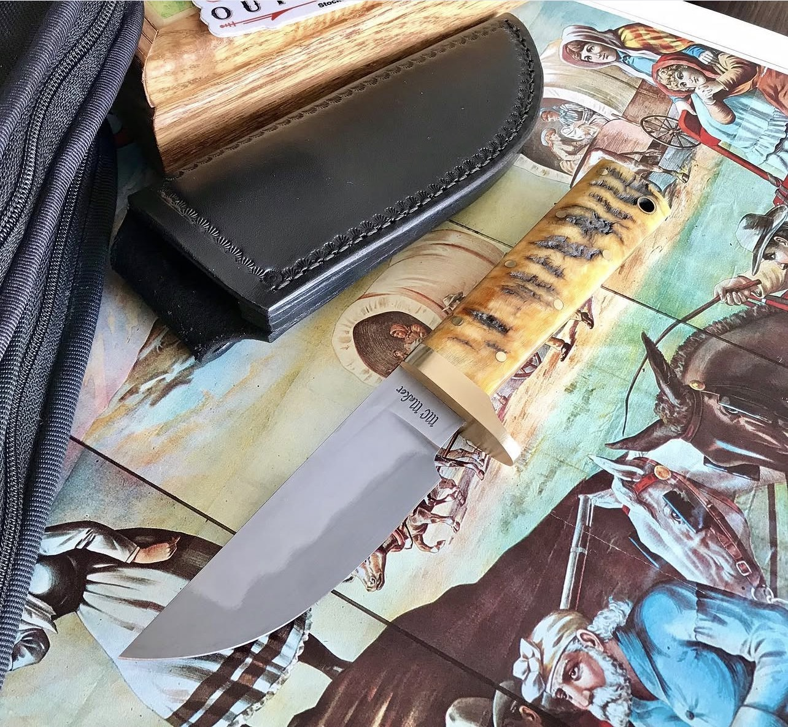
A few simple habits help preserve the blade, handle and leather sheath.
Wipe the blade clean and dry it thoroughly after use.
For carbon steels, apply a light protective oil before storage.
Keep natural materials away from prolonged moisture and heat.
Keep leather dry and allow it to dry naturally if wet.
Store in a dry, ventilated place and avoid long-term storage inside leather.
A knife is a cutting tool. Avoid prying, twisting or striking.
Contact MC Knifemaker to discuss a custom knife or current work.